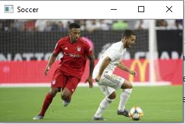
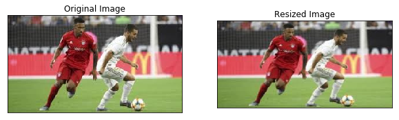
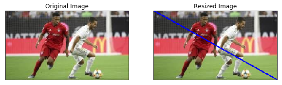
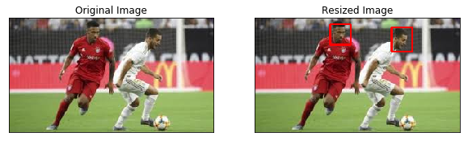
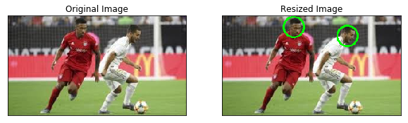
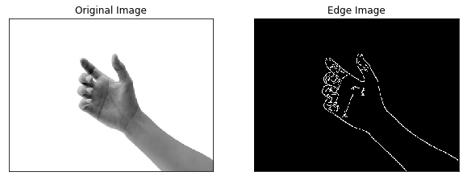
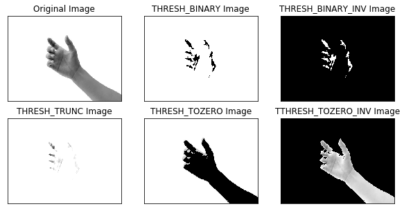

If you are a person who wants to perform image classification, video classification or just simply want to play with images on Python, OpenCV is one of the most popular package out there to help you with it.
Loading and Displaying images
Let's start with importing packages that we need
import cv2
import imutils
import matplotlib.pyplot as plt
We are going to load a soccer image, and print out the current width, height, and depth.
# load image
image = cv2.imread('soccer.jpg')
# check the width, height, and depth
(h, w, d) = image.shape
print("width={}, height={}, depth={}".format(w, h, d))
width=300, height=168, depth=3
As you can see, there is no image shown above. In order for us to see the image, we need to employ cv2.imshow("Image", image)
cv2.imshow("Soccer", image)
cv2.waitKey(0)
cv2.destroyAllWindows()

There will be a new windown shown as above. As we can see, this new window is called Soccer as we define in cv2.imshow.
We also need cv2.waitKey(0) so that the window will not close immediately after opening.
We also need cv2.destroyAllWindows() so that we can close it whenever we want. Without this, everything will be not responding.
Resizing images
Resizing images is extremely important in many projects involving image classification. Resizing images helps to process the image to fit better to the neural network. This also makes the model to run faster and more effective. In addition, sometimes, the training images and testing images have different dimension; hence, we need to make sure they are the same by resizing.
resized_image = cv2.resize(image, (400, 200))
plt.figure(figsize=(10,10))
plt.subplot(121),plt.imshow(cv2.cvtColor(image, cv2.COLOR_BGR2RGB))
plt.title('Original Image'), plt.xticks([]), plt.yticks([])
plt.subplot(122),plt.imshow(cv2.cvtColor(resized_image, cv2.COLOR_BGR2RGB))
plt.title('Resized Image'), plt.xticks([]), plt.yticks([])
plt.show()

Drawing on images
In this section, I am going to show you how to draw rectangle, circle, line, or write a text message on an image. Since drawing on an image will overwrite the previous file, we need to create a copy of it
draw_image = image.copy()
Line
Let's start with drawing a line. in order for us to draw a line, we need 5 things: - image - staring coordinate - ending coordinate - color - thickness
For example, if we want to draw a blue line with thickness of 2 diagonally from the most top left corner to the most bottom right corner. We are going to draw the following way.
Note: Color in cv2 is represented as (B,G,R) instead of (R,G,B)
# most top left corner
start = (0,0)
# most bottom right corner,
# w and h is the width and height of the image
end = (w,h)
# to get blue, we let B = 255, while the rest equal to 0
color = (255,0,0)
thickness = 2
cv2.line(draw_image,start, end, color, thickness)
plt.figure(figsize=(10,10))
plt.subplot(121),plt.imshow(cv2.cvtColor(image, cv2.COLOR_BGR2RGB))
plt.title('Original Image'), plt.xticks([]), plt.yticks([])
plt.subplot(122),plt.imshow(cv2.cvtColor(draw_image, cv2.COLOR_BGR2RGB))
plt.title('Resized Image'), plt.xticks([]), plt.yticks([])

Rectangle
Similar to line, in order for us to draw rectangle, we also need 5 things: - image - staring coordinate which is on the top left - ending coordinate which is on the bottom right - color - thickness
Let's try to draw a red rectangle with thickness of 2 around the face of players by pre-determined the coordinates
draw_image = image.copy()
# top left corner of 1st rectangle
start = (110,10)
# bottom right corner of 1st rectangle
end = (140,40)
# to get red, we let R = 255, while the rest equal to 0
color = (0,0,255)
thickness = 2
cv2.rectangle(draw_image,start, end, color, thickness)
# top left corner of 2nd rectangle
start = (200,15)
# bottom right corner of 2nd rectangle
end = (230,50)
cv2.rectangle(draw_image,start, end, color, thickness)
plt.figure(figsize=(10,10))
plt.subplot(121),plt.imshow(cv2.cvtColor(image, cv2.COLOR_BGR2RGB))
plt.title('Original Image'), plt.xticks([]), plt.yticks([])
plt.subplot(122),plt.imshow(cv2.cvtColor(draw_image, cv2.COLOR_BGR2RGB))
plt.title('Resized Image'), plt.xticks([]), plt.yticks([])

Circle
To draw a circle, we also need 5 things. However, they will be slightly different from line and rectangle - image - center coordinate of the circle - radius in pixels - color - thickness
Note: for the thickness, in order to get a fill in circle, we can put in a negative value
Let's try to draw green circle around the players face
draw_image = image.copy()
# center of the 1st circle
center = (120,20)
# radius of the 1st circle
radius = 17
# to get green, we let G = 255, while the rest equal to 0
color = (0,255,0)
thickness = 2
cv2.circle(draw_image, center, radius, color, thickness)
# center of the 2nd circle
center = (210,35)
# radius of the 2nd circle
radius = 17
cv2.circle(draw_image, center, radius, color, thickness)
plt.figure(figsize=(10,10))
plt.subplot(121),plt.imshow(cv2.cvtColor(image, cv2.COLOR_BGR2RGB))
plt.title('Original Image'), plt.xticks([]), plt.yticks([])
plt.subplot(122),plt.imshow(cv2.cvtColor(draw_image, cv2.COLOR_BGR2RGB))
plt.title('Resized Image'), plt.xticks([]), plt.yticks([])

Text
To draw a text on an image, we need to use putText function. Different from the others, we need 7 things: - image - text - starting point for the text - font - font size - color of the text - thickness of the text
draw_image = image.copy()
text = "Soccer !!!"
start = (10,25)
font = cv2.FONT_HERSHEY_SIMPLEX
scale = 0.7
color = (0,255,0)
thick = 2
cv2.putText(draw_image, "Soccer !!!", (10, 25), cv2.FONT_HERSHEY_SIMPLEX, 0.7, (0, 255, 0), 2)
plt.figure(figsize=(10,10))
plt.subplot(121),plt.imshow(cv2.cvtColor(image, cv2.COLOR_BGR2RGB))
plt.title('Original Image'), plt.xticks([]), plt.yticks([])
plt.subplot(122),plt.imshow(cv2.cvtColor(draw_image, cv2.COLOR_BGR2RGB))
plt.title('Resized Image'), plt.xticks([]), plt.yticks([])

Image preprocessing
Sometimes, before putting the images into the neural network, we need to preprocess our image to eliminate noise. I will show 2 simplest preprocessing steps that we can use on images: edge detection and thresholding.
Before we want to do edge detection or thresholding, we need to change our image to gray color as gray images are less sensitive to noise.
hand = cv2.imread("hand.jpg")
hand = cv2.resize(hand, (400,300))
# cv2.imshow("hand", hand)
gray_hand = cv2.cvtColor(hand, cv2.COLOR_BGR2GRAY)
# cv2.imshow("Gray", gray_hand)
# cv2.waitKey(0)
# cv2.destroyAllWindows()
1. Edge Detection
For edge detection, we are going to use Canny function. There are 4 things that we need to include in this function: - image - minVal: the minimum threshold - maxVal: the maximum threshold - aperture_size: default is 3 - L2gradient: default is false
import matplotlib.pyplot as plt
edged = cv2.Canny(gray_hand, 30, 150)
plt.figure(figsize=(10,10))
plt.subplot(121),plt.imshow(gray_hand, cmap = 'gray')
plt.title('Original Image'), plt.xticks([]), plt.yticks([])
plt.subplot(122),plt.imshow(edged, cmap = 'gray')
plt.title('Edge Image'), plt.xticks([]), plt.yticks([])
plt.show()

Thresholding
Image thresholding helps us to remove lighter, or darker regions and contours of images. To perform thresholding, we need to deploy cv2.threshold function. There are 4 required inputs for this function: - image - threshold - maxVal - thresholding method
There are different threshold flags. I'm going to discuss 5 simplest threshold method: - cv2.THRESH_BINARY: + if(r > threshold) : r = maxVal else r = 0 + if(g > threshold) : g = maxVal else g = 0 + if(b > threshold) : b = maxVal else b = 0 - cv2.THRESH_BINARY_INV: + if(r > threshold) : r = 0 else r = maxVal + if(g > threshold) : g = 0 else g = maxVal + if(b > threshold) : b = 0 else b = maxVal - cv2.THRESH_TRUNC: + if(r > threshold) : r = threshold + if(g > threshold) : g = threshold + if(b > threshold) : b = threshold - cv2.THRESH_TOZERO: + if(r <= threshold) : r = 0 + if(g <= threshold) : g = 0 + if(b <= threshold) : b = 0 - cv2.THRESH_TOZERO: + if(r > threshold) : r = 0 + if(g > threshold) : g = 0 + if(b > threshold) : b = 0
_, th1 = cv2.threshold(gray_hand, 127, 255, cv2.THRESH_BINARY)
_, th2 = cv2.threshold(gray_hand, 127, 255, cv2.THRESH_BINARY_INV)
# Before 127, keep color, after make all become 127
_, th3 = cv2.threshold(gray_hand, 127, 200, cv2.THRESH_TRUNC)
# Before 127, become 0, after same
_, th4 = cv2.threshold(gray_hand, 190, 250, cv2.THRESH_TOZERO)
# After 127, become 0, before same
_, th5= cv2.threshold(gray_hand, 190, 250, cv2.THRESH_TOZERO_INV)
plt.figure(figsize=(10,5))
plt.subplot(231),plt.imshow(gray_hand, cmap = 'gray')
plt.title('Original Image'), plt.xticks([]), plt.yticks([])
plt.subplot(232),plt.imshow(th1, cmap = 'gray')
plt.title('THRESH_BINARY Image'), plt.xticks([]), plt.yticks([])
plt.subplot(233),plt.imshow(th2, cmap = 'gray')
plt.title('THRESH_BINARY_INV Image'), plt.xticks([]), plt.yticks([])
plt.subplot(234),plt.imshow(th3, cmap = 'gray')
plt.title('THRESH_TRUNC Image'), plt.xticks([]), plt.yticks([])
plt.subplot(235),plt.imshow(th4, cmap = 'gray')
plt.title('THRESH_TOZERO Image'), plt.xticks([]), plt.yticks([])
plt.subplot(236),plt.imshow(th5, cmap = 'gray')
plt.title('TTHRESH_TOZERO_INV Image'), plt.xticks([]), plt.yticks([])
plt.show()
